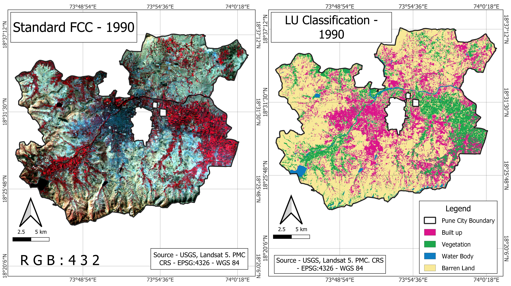
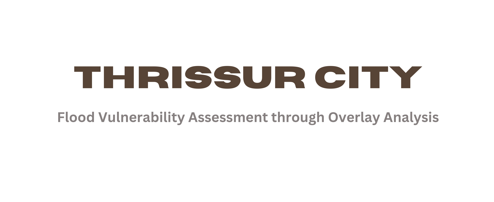
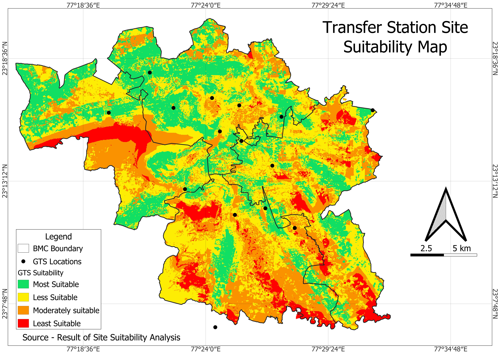

Helping Organizations Make Smarter Decisions with Location Intelligence.
Geomatica transforms complex spatial data into clear, actionable insights for Urban Planners, Developers, and Policy Makers.
Core Capabilities
Advanced Cartography
Creating visually stunning, publication-ready maps that communicate complex spatial data clearly.
Web GIS Development
Interactive web mapping applications using Leaflet, Mapbox, and OpenLayers tailored to your data.
Spatial Analysis
Deep dive data analytics, site selection, suitability modeling, and demographic profiling.
Geodatabase Management
Design, implementation, and maintenance of robust spatial databases (PostGIS, Geopackage).
How We Work
Discovery
We define your spatial problem, assess available data, and determine the technical roadmap.
Analysis & Modelling
Processing satellite imagery and vector data using advanced algorithms (RF, AHP, CA).
Delivery
You receive interactive web maps, high-res layouts, and actionable technical reports.
Featured Projects
A selection of recent mapping and analysis work.

Modelling Urban Expansion
Simulation of urban expansion trends using Cellular Automata (CA) and proximity constraints.

Flood Vulnerability Assessment
Comprehensive assessment of flood vulnerability using geospatial analysis.

Site Suitability Analysis
Multi-criteria decision analysis to identify optimal locations based on proximity and topographical factors.

Land Use Change Detection
Analysis of LULC changes over time using multi-temporal satellite data.

Vectorizing Pune City
A comprehensive vector basemap creation project covering road networks, building footprints, and administrative boundaries.
Meet Our Team
Abhijeet Pawar
I am a City Professional and GIS Specialist currently pursuing an MA in Cities and Governance at the Tata Institute of Social Sciences. With a strong foundation in Public Administration and geospatial analytics, I bridge the gap between technical data and public policy. My expertise lies in translating satellite imagery into actionable insights for urban planning, disaster management, and environmental monitoring.
Nandini Bhatnagar
I am an urban governance and spatial data enthusiast pursuing an MA in Cities and Governance at the Tata Institute of Social Sciences. My work focuses on leveraging data-driven insights to build climate-resilient cities. I specialize in the intersection of spatial modeling and actionable policy, translating complex urban challenges into sustainable planning solutions.
Ready to visualize your data?
Whether you need a custom web map, spatial analysis for a research project, or a full GIS implementation, we are here to help.